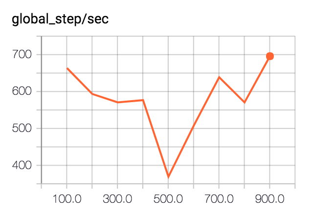

Simple Regression with a TensorFlow Estimator
Saturday May 6, 2017
With TensorFlow 1.1, the Estimator API is now at tf.estimator. A number of "canned estimators" are at tf.contrib.learn. This higher-level API bakes in some best practices and makes it much easier to do a lot quickly with TensorFlow, similar to using APIs available in other languages.
Data
This example will use the very simple US Presidential Party and GDP Growth dataset: president_gdp.csv.
The regression problem will be to predict annualized percentage GDP growth from presidential party.
R
R is made for problems such as this, with an API that makes it quite easy:
> data = read.csv('president_gdp.csv')
> model = lm(growth ~ party, data)
> predict(model, data.frame(party=c('R', 'D')))
## 1 2
## 2.544444 4.332857The dataset is very small, and we won't introduce a train/test split. Linear regression is just a way of calculating means: we expect our model to predict the mean GDP growth conditional on party. Annual GDP growth during Republican presidents has been about 2.5%, and during Democratic presidents about 4.3%.
sklearn
Moving into Python, let's first read in the data and get it ready, using NumPy and Pandas.
import numpy as np
import pandas as pd
data = pd.read_csv('president_gdp.csv')
party = data.party == 'D'
party = np.expand_dims(party, axis=1)
growth = data.growthWith R, we relied on automatic handling of categorical variables. Here we explicitly change the strings 'R' and 'D' to be usable in a model: Boolean values will become zeros and ones. We also adjust the party data shape to be one row per observation.
Tracking TensorFlow Python APIs, the Estimator API comes from TF Learn, which is inspired by scikit-learn. Here's the regression with scikit:
import sklearn.linear_model
model = sklearn.linear_model.LinearRegression()
model.fit(X=party, y=growth)
model.predict([[0], [1]])
## array([ 2.54444444, 4.33285714])TensorFlow
This will abuse the API a little to maximize comparability to the examples above; you'll see warnings when you run the code, which will be addressed in the next section.
import tensorflow as tf
party_col = tf.contrib.layers.real_valued_column(column_name='')
model = tf.contrib.learn.LinearRegressor(feature_columns=[party_col])Unlike with scikit, we need to specify the structure of our regressors when we instantiate the model object. This is done with FeatureColumns. There are several options; real_valued_column is probably the simplest but others are useful for general categorical data, etc.
We're providing that data as a simple matrix, so it's important that we use the empty string '' for column_name. If there is a substantial column_name, we'll have to provide data in dictionaries with column names as keys.
model.fit(x=party, y=growth, steps=1000)
list(model.predict(np.array([[0], [1]])))
## [2.5422058, 4.3341689]TensorFlow needs to be told how many steps of gradient descent to run, or it will keep going indefinitely, without additional configuration. A thousand iterations gets very close to the results achieved with R and with scikit.
There are a lot of things that LinearRegressor takes care of. In this code, we did not have to explicitly:
- Create any TensorFlow variables.
- Create any Tensorflow ops.
- Choose an optimizer or learning rate.
- Create a TensorFlow session.
- Run ops in a session.
This API also does a lot more than the R or scikit examples above, and allows for even more extensions.
TensorFlow Extensions
The Estimator API does a lot by default, and allows for a lot more optionally.
First, there is a model_dir. Above, TensorFlow automatically used a temporary directory. It's nicer to explicitly choose a model_dir.
model = tf.contrib.learn.LinearRegressor(feature_columns=[party_col],
model_dir='tflinreg')The model_dir is used for two main purposes:
- Saving TensorBoard summaries (log info)
- Saving model checkpoints
Automatic TensorBoard
Like an input_producer, an Estimator automatically writes information for TensorBoard. To check them out, point TensorBoard at the model_dir and browse to localhost:6006.
$ tensorboard --logdir tflinregFor the example above, we get the model graph and two scalar summaries.
Here's what was was constructed in the TensorFlow graph for our LinearRegressor:

In the scalar summaries, we get a measure of how fast the training process was running, in global steps per second:

The variation in speed shown here is not particularly meaningful.
And we get the training loss:

We didn't really need to train for a full thousand steps.
By default, summaries are generated every 100 steps, but this can be set via save_summary_steps in a RunConfig, along with several other settings.
Further customization, with support for additional metrics, validation on separate data, and even automatic early stopping, is available with ValidationMonitor.
Automatic Model Save/Restore
After training for 1,000 steps above, TensorFlow saved the model to the model_dir. If we point to the same model_dir again in a new Python session, the model will be automatically restored from that checkpoint.
import numpy as np
import tensorflow as tf
party_col = tf.contrib.layers.real_valued_column(column_name='')
model = tf.contrib.learn.LinearRegressor(feature_columns=[party_col],
model_dir='tflinreg')
list(model.predict(np.array([[0], [1]])))
## [2.5422058, 4.3341689]For more control over how often and when checkpoints are saved, see RunConfig.
Using input functions
Above, training data was provided via x and y arguments, which is like how scikit works, but not really what TensorFlow Estimators should use.
The appropriate mechanism is to make an input function that returns the equivalents to x and y when called. The function is passed as the input_fn argument to model.fit(), for example.
This approach is flexible and makes it easy to avoid, for example, keeping track of separate data structures for data and labels.
Distributed Training
Among the tf.contrib.learn goodies is tf.contrib.learn.Experiment, which works with an Estimator to help do distributed training. It looks like this one is still settling down, with a lot of deprecated bits at the moment. I'm interested to see more about this. For now, you could check out a Google Cloud ML example that works with learn_runner.
I'm working on Building TensorFlow systems from components, a workshop at OSCON 2017.